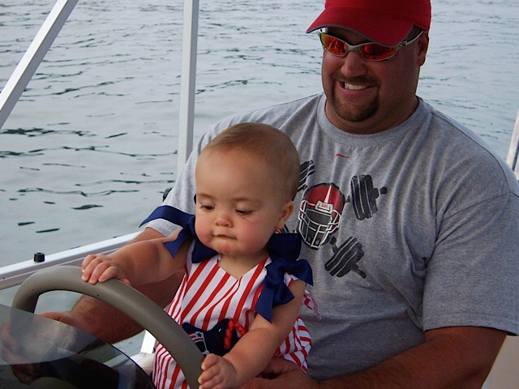
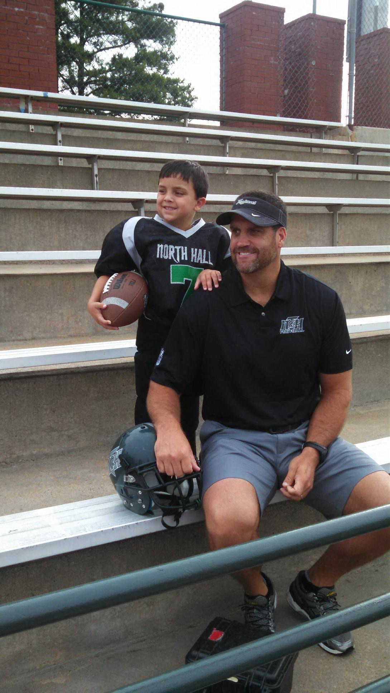
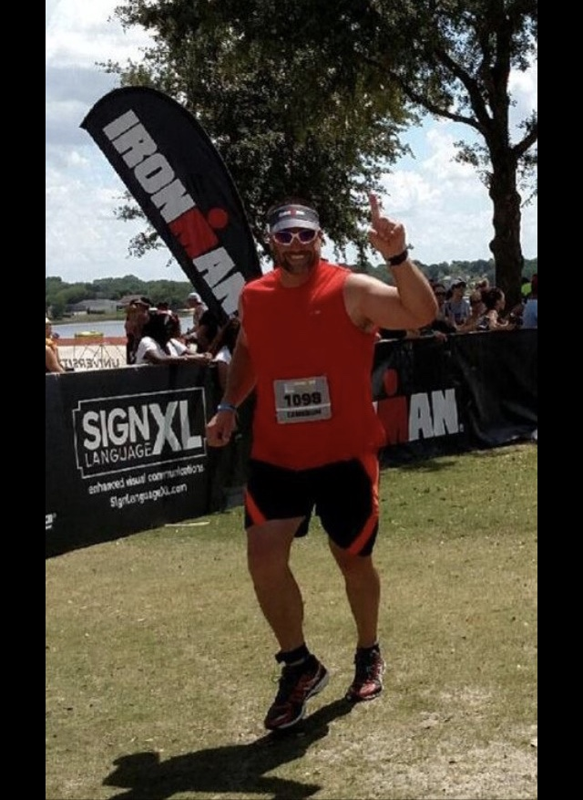

This is a journey that I never thought I would be making. Never thought the love of one item could take me so far. The need to find a passion. I was handed a camera one day. Thought I would hate it. Was handed a camera because it was convenient. Was at the right place at the right time. Just like you have to be when taking a photo. I was there because of my brother. Really if you think about it it was because of my dad. If my dad had not grown up playing football he would not have wanted to coach which means he would not have made my brother play which means I would not have grown up going to the football field every weekend and spending almost every night at the practice field therefore I would have never gotten handed a camera because the parents wanted photos. Everything comes back to my dad. The one person who I wanted to impress. Who I knew would support me through anything. Who knew one day I would make it on the big stage. The one person I actually wanted there when I did make it on the big stage. And the one person who is not going to get to see me make it on that big stage. The one person in my life that I lost before I could accomplish my goals. The person I never thought would miss that day. He would have canceled everything to be there that day. Every important meeting. Every long drive to work. He would have been there. Right on the sideline supporting me. Like he always was. My camera gave me an outlet when I knew that he wouldn’t be there anymore. I explored what my other talents were. Photography you led me to more. And for that I am grateful. I am grateful for the outlet. I am grateful for the way that you have given me lifelong goals. I am grateful for the places that you have taken me. You have taken me around the globe. Taken me across the street. Taken me to places I never knew were possible. You have healed me in a lot of ways. Viewing life through the small square that you call a viewfinder. It blocks out the things to the left and the right and makes you focus on the thing right in front of you. The only thing that you are supposed to be focusing on during that time. The only important thing that is needed. It is tempting to put down the camera and want to see the bigger picture and while sometimes that is needed and something that should be done just focus on the thing ahead. The journey will be worth it and he will be smiling. There is more to life than loss and I have seen that. The world will move on but he will always be there with me. I know he is pushing me from behind. He gave me photography and photography you have healed me.